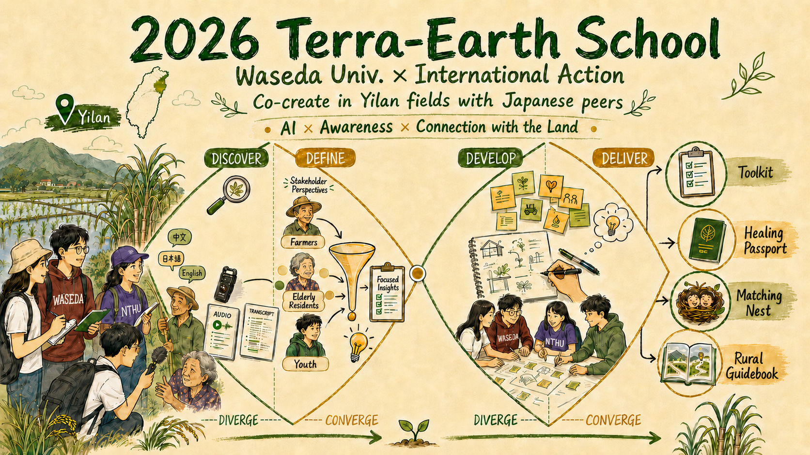

<!DOCTYPE html>
<html lang="zh-TW">
<head>
  <meta charset="UTF-8">
  <meta name="viewport" content="width=device-width, initial-scale=1.0">
  <title>2026 泰拉學校：地之校成果展｜台日跨國行動 × AI 食農設計</title>

  <!-- Favicon -->
  <link rel="icon" href="https://i.ibb.co/ZzxC3BVn/icon.png" type="image/png">

  <!-- SEO Tags -->
  <meta name="description" content="2026 泰拉學校「地之校」成果回顧展：日本早稻田大學與台灣清華大學跨國合作，在宜蘭員山、南澳以設計思考、AI賦能與風土對話，共創食農新未來。">
  <meta name="keywords" content="泰拉學校, 地之校, 早稻田大學, 永續食農, 設計思考, AI農業, 國際交流, 世界公民, 宜蘭踏查">

  <!-- Google Fonts -->
  <link rel="preconnect" href="https://fonts.googleapis.com">
  <link rel="preconnect" href="https://fonts.gstatic.com" crossorigin>
  <link href="https://fonts.googleapis.com/css2?family=Outfit:wght@300;400;500;600;700;800;900&family=Noto+Sans+TC:wght@300;400;500;700;900&family=Noto+Sans+JP:wght@300;400;700;900&display=swap" rel="stylesheet">

  <!-- Custom Styles Sheet -->
  <link rel="stylesheet" href="css/styles.css">

  <!-- Tailwind CSS CDN -->
  <script src="https://cdn.tailwindcss.com"></script>
  <script>
    tailwind.config = {
      theme: {
        extend: {
          colors: {
            terra: {
              green: '#0F2A1C',
              greenLight: '#1D3D2C',
              orange: '#B35C24',
              orangeLight: '#FAF5F0',
              bg: '#FAF8F5',
              ink: '#1C2421'
            }
          }
        }
      }
    }
  </script>

  <!-- React & ReactDOM CDN -->
  <script src="https://unpkg.com/react@18/umd/react.production.min.js" crossorigin></script>
  <script src="https://unpkg.com/react-dom@18/umd/react-dom.production.min.js" crossorigin></script>
  
  <!-- Babel Standalone (for compiling JSX on-the-fly) -->
  <script src="https://unpkg.com/@babel/standalone/babel.min.js"></script>

  <!-- Lucide Icons -->
  <script src="https://unpkg.com/lucide@latest"></script>
</head>
<body class="bg-stone-50 text-stone-900 antialiased">

  <!-- React Mount Root -->
  <div id="root"></div>

  <!-- React Main Script Inline to bypass local CORS file blocks -->
  <script type="text/babel">
    // Multilingual Dictionary
    const translations = {
      zh: {
        brand: "泰拉學校 ｜ 地之校",
        nav: {
          campaign: "2026成果展",
          methodology: "核心方法",
          stories: "風土寫真",
          partners: "合作夥伴",
          next: "下一屆消息"
        },
        hero: {
          title: "2026 泰拉學校・地之校成果展",
          subtitle: "共創落地的食農未來：台日跨國行動 × AI 設計思考",
          desc: "一場早稻田大學與台灣清華大學青年的宜蘭田野實踐，在泥土與科技的交界，探索永續食農的真實解答。",
          ctaVideo: "觀看活動紀錄影片",
          ctaShowcase: "進入線上成果展"
        },
        timeline: {
          title: "五天學習旅程",
          subtitle: "在宜蘭員山、南澳與佛光大學的實地實踐軌跡",
          days: [
            { day: "Day 1", title: "土地感知與員山踏查", desc: "深入阿聰自然田，踏查格外品與在地甘蔗文化，開啟感知雷達。" },
            { day: "Day 2", title: "多語系關係人深度訪談", desc: "與老農、移居者、在地青年對話，用 AI 協作轉寫音檔並進行數據索引編碼。" },
            { day: "Day 3", title: "南澳生態農場與熬糖實作", desc: "親手勞動熬製蔗汁，體驗土地產出的溫度與農業加工轉型實踐。" },
            { day: "Day 4", title: "跨國腦力激盪與原型共創", desc: "台日學生共同定義 HMW 問題，發想並手繪解決方案草圖，產出低保真原型。" },
            { day: "Day 5", title: "成果博覽會與評審發表", desc: "向地方小農、專家與外部評審發表四組 MVP 提案，進行落地驗證評估。" }
          ]
        },
        methodology: {
          title: "設計思考與 AI 方法手札",
          subtitle: "研究團隊如何透過雙鑽石模型與人機協作梳理地方問題",
          stages: [
            { key: "discover", title: "1. Discover (探索階段)", desc: "多語音檔轉譯、四欄式質化研究與人機編碼整理手札。", link: "methodology/discover.html" },
            { key: "define", title: "2. Define (定義階段)", desc: "跨案例主題提煉、家長與老農痛點聚焦、HMW挑戰設計。", link: "methodology/define.html" },
            { key: "develop", title: "3. Develop (發想階段)", desc: "跨國工作坊、共創草圖設計、去金流互助平台打樣。", link: "methodology/develop.html" },
            { key: "deliver", title: "4. Deliver (成果階段)", desc: "四組落地驗證 MVP 成果展示（Toolkit、護照、托育網、生活指南）。", link: "methodology/deliver.html" }
          ]
        },
        quotes: {
          title: "行動者心聲",
          subtitle: "（點選卡片即可播放學員的深度訪談影片）"
        },
        footer: "© 2026 泰拉學校 地之校 - Waseda & NTHU 跨國共創. All rights reserved."
      },
      en: {
        brand: "Terra School | Earth",
        nav: {
          campaign: "2026 Exhibition",
          methodology: "Methodology",
          stories: "Stories",
          partners: "Partners",
          next: "Next Intake"
        },
        hero: {
          title: "2026 Terra Earth School Exhibition",
          subtitle: "Co-creating the Future of Food & Agriculture: Waseda × NTHU",
          desc: "A field action in Yilan by Waseda and Tsinghua University youth. Exploring sustainable food & agriculture at the boundary of land and AI.",
          ctaVideo: "Watch Recap Video",
          ctaShowcase: "Explore Showcase"
        },
        timeline: {
          title: "5-Day Journey",
          subtitle: "Field practices in Yilan Yuanshan, Nanao, and Fo Guang University",
          days: [
            { day: "Day 1", title: "Field Sensing & Yuanshan Survey", desc: "Deep dive into A-Cong's organic farm, survey off-grade crops, and activate observation sensors." },
            { day: "Day 2", title: "Multilingual Stakeholder Interviews", desc: "Talk with farmers, migrants, and local youth; use AI to transcribe audio and code interviews." },
            { day: "Day 3", title: "Nanao Ecological Farm & Sugar Making", desc: "Hand-make cane sugar, experiencing the warmth of soil and practices of agricultural processing transition." },
            { day: "Day 4", title: "Cross-border Brainstorming & Prototyping", desc: "Define HMW questions, sketch solution drafts, and construct low-fidelity models." },
            { day: "Day 5", title: "Exhibition & Jury Presentations", desc: "Present four MVP proposals to local farmers, experts, and jury for validation." }
          ]
        },
        methodology: {
          title: "Design Thinking & AI Practice",
          subtitle: "How the research team structured local problems via Double Diamond & Human-AI Collaboration",
          stages: [
            { key: "discover", title: "1. Discover", desc: "Multilingual transcriptions, 4-column qualitative analysis, and coding notes.", link: "methodology/discover.html" },
            { key: "define", title: "2. Define", desc: "Theme extraction, parent-child pain points, and HMW design challenge.", link: "methodology/define.html" },
            { key: "develop", title: "3. Develop", desc: "Cross-border workshop, co-creation sketches, and mutual-aid platform modeling.", link: "methodology/develop.html" },
            { key: "deliver", title: "4. Deliver", desc: "Exhibition of 4 MVP outcomes (Toolkit, Passport, Nest, Guidebook).", link: "methodology/deliver.html" }
          ]
        },
        quotes: {
          title: "Voices of Action",
          subtitle: "(Click any card to play the student's deep interview video)"
        },
        footer: "© 2026 Terra Earth School - Waseda & NTHU Co-creation. All rights reserved."
      },
      ja: {
        brand: "テラ学校 ｜ 地の校",
        nav: {
          campaign: "2026成果展",
          methodology: "メソッド",
          stories: "フォトストーリー",
          partners: "パートナー",
          next: "次回募集"
        },
        hero: {
          title: "2026 テラ学校・地の校 成果展",
          subtitle: "共創する食と農の未来：早稲田大学 × 台湾清華大学",
          desc: "早稲田大学と台湾清華大学の学生による宜蘭でのフィールドワーク。土とテクノロジーの境界で、持続可能な食農の答えを探る。",
          ctaVideo: "動画を見る",
          ctaShowcase: "オンライン成果展へ"
        },
        timeline: {
          title: "5日間の学習の旅",
          subtitle: "宜蘭員山、南澳、佛光大学での現地実践の軌跡",
          days: [
            { day: "Day 1", title: "土地感知と員山踏査", desc: "自然田に入り、規格外品とサトウキビ文化を調査し、センサを起動。" },
            { day: "Day 2", title: "多言語関係者インタビュー", desc: "農家や移住者と対話。AIで文字起こしを行い、データをインデックス化。" },
            { day: "Day 3", title: "南澳エコ農場と製糖体験", desc: "サトウキビ汁を手作業で煮詰め、土地の温もりと加工移行を体験。" },
            { day: "Day 4", title: "国境を越えたアイデアソン", desc: "HMW課題を定義し、解決策をスケッチ、プロトタイプを作成。" },
            { day: "Day 5", title: "成果発表会と審査", desc: "地元農家や専門家に4つのMVP提案を発表し、フィードバックを得る。" }
          ]
        },
        methodology: {
          title: "デザイン思考とAIメソッド",
          subtitle: "ダブルダイヤモンドと人機協調でローカル課題を整理したプロセス",
          stages: [
            { key: "discover", title: "1. Discover (探索)", desc: "音声書き起こし、4カラム質的研究、人機コーディング整理手札。", link: "methodology/discover.html" },
            { key: "define", title: "2. Define (定義)", desc: "テーマ抽出、農家と親子の悩みフォーカス、HMWチャレンジ設計。", link: "methodology/define.html" },
            { key: "develop", title: "3. Develop (発想)", desc: "日台共同ワークショップ、スケッチ設計、相互支援プラットフォーム試作。", link: "methodology/develop.html" },
            { key: "deliver", title: "4. Deliver (成果)", desc: "4つの実践MVP成果展示（Toolkit、パスポート、Nest、ガイドブック）。", link: "methodology/deliver.html" }
          ]
        },
        quotes: {
          title: "行動者たちの声",
          subtitle: "(カードをクリックしてインタビュー動画を再生します)"
        },
        footer: "© 2026 Terra Earth School - Waseda & NTHU Co-creation. All rights reserved."
      }
    };

    // React Application Code
    const { useState, useEffect } = React;

    

    // Cinematic quotes data with precise crop coordinates to hide video watermarks and subtitles
    const quotesData = [
      {
        id: "ding_xin_lei",
        video: "assets/金句/丁芯蕾完成.mov",
        image: "assets/金句/images/ding_xin_lei.png",
        bgSize: "165%",
        bgPosition: "12% 28%",
        name: { zh: "丁芯蕾", en: "Ding Xin-lei", ja: "丁芯蕾" },
        role: { zh: "台灣清華大學學員", en: "NTHU Student", ja: "清華大学受講生" },
        frontQuote: {
          zh: "「張明麗老師說的『醫食同源』讓我覺得印象深刻，過去也有聽過可以從食物治療身體這種說法，但這次是實際有一個人告訴我們說：她是因為什麼原因來到這個地方，讓我真的可以瞭解到人和土地的連結力量是非常強大的。」",
          en: "\"Teacher Chang Ming-li's words 'medicine and food share the same origin' left a deep impression on me. I had heard about healing the body through food before, but this time someone actually told us the reason why she came to this place, which allowed me to truly understand that the power of connection between people and the land is incredibly strong.\"",
          ja: "「張明麗先生の『医食同源』という言葉が印象的でした。食べ物で体を治すという話は以前にも聞いたことがありましたが、今回は実際に彼女がどのような理由でこの場所に来たのかを語ってくれ，人と土地の結びつきの力が非常に強力であることを本当に実感しました。」"
        },
        backTitle: {
          zh: "【跨文化深度碰撞】體驗台日青年長時間跨國交流，開啟對在地食農永續的全新理解",
          en: "[Cross-Cultural Spark] Experiencing deep cross-border exchange between Taiwanese and Japanese youth, opening new understandings of local food and agricultural sustainability.",
          ja: "【異文化の深き交わり】日台の若者による長時間の國際交流を体験し、地域の食農の持続可能性に対する新たな理解を開く。"
        }
      },
      {
        id: "uesugi_yuji",
        video: "assets/金句/上杉完成.mov",
        image: "assets/金句/images/uesugi_yuji.png",
        bgSize: "165%",
        bgPosition: "85% 28%",
        name: { zh: "上杉勇司", en: "Uesugi Yuji", ja: "上杉勇司" },
        role: { zh: "早稻田大學指導老師", en: "Waseda Advisor", ja: "早稲田大学指導教員" },
        frontQuote: {
          zh: "「通常在課堂上，我們透過大腦吸收知識，但是這次透過和自然的互動，學生們是透過身體，吸收來自自然的能量，我認為那種經驗是一般教育系統中所缺乏的。儘管我們的價值觀，信仰，制度不同，但我們仍然可以合作，並且為變得更好而努力。那種經驗對學生來說就像是種子，總有一天種子會生根發芽成長。能夠面對面的交流，不只是知識，更是與真實的人交流，將成為未來與他人合作能力的基礎。」",
          en: "\"Usually in the classroom, we absorb knowledge through our brains, but this time through interaction with nature, students absorb natural energy through their bodies. I believe that kind of experience is lacking in general education systems. Although our values, beliefs, and institutions differ, we can still collaborate and strive to become better. That experience is like a seed for students; one day it will take root, sprout, and grow. Being able to exchange face-to-face, not just knowledge but with real people, will become the foundation of their future ability to collaborate with others.\"",
          ja: "「通常、教室では脳を通じて知識を吸収しますが、今回は自然との対話を通じて、学生たちは体を通じて自然のエネルギーを吸収しました。そのような経験は、一般の教育システムでは欠けているものだと思います。私たちの価値観、信念、制度が異なっていても、私たちは協力し、より良くなるために努力することができます。その経験は学生にとって種のようなものであり、いつか根を張り、芽を出し、成長するでしょう。知識だけでなく、本物の人々との対面での交流は、将来他の人々と協力する能力の基礎となるでしょう。」"
        },
        backTitle: {
          zh: "【青年共創能量】看見台日青年在田野中直面挑戰並協作解決問題的強大實踐力",
          en: "[Youth Co-creation Power] Observing the strong practical capabilities of Taiwanese and Japanese youth facing field challenges and collaborating on real solutions.",
          ja: "【若者の共創エネルギー】フィールドで課題に直面し、協働して解決策を生み出す日台の若者の力強い実践力を目の当たりにする。"
        }
      },
      {
        id: "igarashi_yuzuki",
        video: "assets/金句/五十嵐完成.mov",
        image: "assets/金句/images/igarashi_yuzuki.png",
        bgSize: "165%",
        bgPosition: "10% 28%",
        name: { zh: "五十嵐悠月", en: "Igarashi Yuzuki", ja: "五十嵐悠月" },
        role: { zh: "早稻田大學學員", en: "Waseda Student", ja: "早稲田大学受講生" },
        frontQuote: {
          zh: "「這是我第一次接觸到農業以及學習到有人能平衡農耕與生活，讓我覺得很有意思。尤其知道台灣有人應用秀明農法，這是一種來自日本的農耕方式，讓我感覺到了台灣和日本的連結。這也是我第一次有這麼長的時間可以跟外國的同學一起討論問題，學習解決問題，讓我覺得很有趣。」",
          en: "\"This was my first time encountering agriculture and learning that someone can balance farming and life, which I found very interesting. Especially knowing that people in Taiwan apply Shumei Natural Agriculture, a farming method originating from Japan, made me feel the connection between Taiwan and Japan. This was also my first time spending such a long period discussing and learning to solve problems with foreign students, which was very fun.\"",
          ja: "「農業に触れ、農作業と生活を両立させている人がいることを知ったのはこれが初めてで、とても興味深かったです。特に、日本発祥の農法である秀明自然農法を台湾で実践している人がいると知り、台湾と日本の繋がりを感じました。また、外国の学生とこれほど長い時間をかけて課題を議論し、解決策を学ぶのも初めてで、とても面白かったです。」"
        },
        backTitle: {
          zh: "【農務與工作的平衡】首次體驗農業與自然農法的啟發，反思人與土地的共生關係",
          en: "[Balancing Farming & Work] Inspired by a first-time experience with agriculture and natural farming, reflecting on the symbiotic relationship between humans and the land.",
          ja: "【農作業と仕事の両立】農業と自然農法を初めて体験した啟發から、人間と土地の共生関係を再考する。"
        }
      },
      {
        id: "diao_wei_cheng",
        video: "assets/金句/刁完成.mov",
        image: "assets/金句/images/diao_wei_cheng.png",
        bgSize: "165%",
        bgPosition: "85% 28%",
        name: { zh: "刁元廷", en: "Diao Yuan-ting", ja: "刁元廷" },
        role: { zh: "台灣清華大學學員", en: "NTHU Student", ja: "清華大学受講生" },
        frontQuote: {
          zh: "「讓我驚奇的是它讓我看到不一樣的生活型態，我的阿公阿嬤就是田園農村的人，我以前以為農村只剩下老人家或者是那種抽空的感覺，沒想到我在這裡看到的是很多年輕人或是很多人會願意回來農村半農半X，或者是重新回到土地上去耕作，去了解這塊土地，這真的是讓我很意外沒有想到竟然有人會有這樣的生活型態的出現，也讓我覺得有機會的話我會蠻想試試看的。」",
          en: "\"What amazed me was that it showed me a different lifestyle. My grandparents are from rural farming villages, and I used to think that rural areas only had elderly people or felt emptied out. I didn't expect to see many young people here willing to return to the countryside for 'half-farming, half-X,' or returning to the land to farm and understand it. It really surprised me; I didn't expect this kind of lifestyle to exist, and it makes me want to try it if I have the opportunity.\"",
          ja: "「田舎の農村出身の祖父母を持つ私にとって、これまで農村は高齢者ばかりで過疎化しているイメージでした。しかし、ここで多くの若者が『半農半X』として農村に戻ったり、再び土地で耕作し、土地を理解しようとしたりしている姿を見て驚きました。このようなライフスタイルが存在するとは予想外で、機会があればぜひ試してみたいと思いました。」"
        },
        backTitle: {
          zh: "【理工腦的感官覺察】在森林靜坐與自我對話中放下邏輯，開啟前所未有的心靈觸動",
          en: "[Sensory Awareness of a Logical Mind] Putting aside logic during forest meditation and inner dialogue, unlocking an unprecedented spiritual touching.",
          ja: "【理系脳の感覚的覚察】森の中での静座と自己対話を通じて論理を脇に置き、これまでにない深い心の震えを体験する。"
        }
      },
      {
        id: "zhao_lyu",
        video: "assets/金句/呂珈安招姍姍完成.mov",
        image: "assets/金句/images/zhao_lyu.png",
        bgSize: "130%",
        bgPosition: "55% 15%",
        name: { zh: "招姍姍 / 呂珈安", en: "Zhao Shan-shan & Lyu Jia-an", ja: "招姍姍・呂珈安" },
        role: { zh: "台灣清華大學學員", en: "NTHU Students", ja: "清華大学受講生" },
        frontQuote: {
          zh: "「呂珈安：我第一次那麼六點半起床，然後走那麼遠的路，我真的覺得很佩服我自己……但我仔細想，這是很多農夫每天的日常，這些農夫為了經濟或者自己的理想，可以做到我們平常一天就很難忍受的事情，我覺得他們真的是很辛苦。\n招姍姍：可以這樣跟日本學生交流我覺得是非常非常難得的經驗，但是像我們這次有長時間的交流，而且在很短的時間內就產出一份實際的簡報，同組的日本同學說我們做的很好，我覺得很有收穫。」",
          en: "\"Lyu Jia-an: This was my first time waking up at 6:30 AM and walking such a long distance; I really admire myself... But thinking about it carefully, this is the daily routine of many farmers. For their economy or ideals, they endure what we find hard to tolerate for even one day. I think they work incredibly hard.\nZhao Shan-shan: Being able to exchange with Japanese students is an extremely rare experience. We had long-term exchanges and produced a presentation in a very short time. The Japanese students in our group said we did great. I found it very rewarding.\"",
          ja: "「呂珈安：朝6時半に起きてこんなに長い距離を歩いたのは初めてで、自分を誇りに思います...。でもよく考えると、これは多くの農家の日常なのです。経済的理由や理想のために、私たちが一日耐えるのも難しいことを彼らは毎日こなしています。本当に大変な仕事だと思います。\n招姍姍：日本の学生とこのように交流できたのは非常に貴重な経験です。長時間の交流があり、非常に短期間で実際のプレゼンテーションを作成しました。同じグループの日本の学生が、私たちはよくやったと言ってくれました。とても実り多いものでした。」"
        },
        backTitle: {
          zh: "【走入農夫日常】體驗清晨下田的辛勞與土地溫度，感佩在地小農傳達的偉大理念",
          en: "[Stepping into a Farmer's Routine] Experiencing the labor and warmth of early morning farming, admiring the great ideas communicated by local organic farmers.",
          ja: "【農家の日常に入る】早朝の農作業の苦労と土地の溫もりを體驗し、地元の有機農家が伝える偉大な理念に感銘を受ける。"
        }
      },
      {
        id: "zheng_bo_hong",
        video: "assets/金句/柏宏完成.mov",
        image: "assets/金句/images/zheng_bo_hong.png",
        bgSize: "165%",
        bgPosition: "88% 28%",
        name: { zh: "鄭伯宏", en: "Zheng Bo-hong", ja: "鄭伯宏" },
        role: { zh: "台灣清華大學學員", en: "NTHU Student", ja: "清華大学受講生" },
        frontQuote: {
          zh: "「這幾天下來我覺得過得很充實，就是有體驗課，同時可以採訪到很多當地的人。每天接近下午晚上的時候，還有Percy老師教的設計思考加上AI的應用，我覺得對我們來說是蠻有幫助的工具。」",
          en: "\"I felt these past few days were very fulfilling, with hands-on experience classes and the opportunity to interview many local people. Every day toward late afternoon, there was also the application of design thinking combined with AI taught by Teacher Percy, which I think is a very helpful tool for us.\"",
          ja: "「この数日間はとても充実していたと感じています。体験クラスがあり、同時に多くの地元の人々にインタビューすることができました。毎日夕方頃には、Percy先生によるデザイン思考とAIの応用についての授業もあり、私たちにとって非常に役立つツールだと感じました。」"
        },
        backTitle: {
          zh: "【學術研究與實踐契合】契合土壤與農業研究，從自然農法的理念中獲得未來學術之路的啟發",
          en: "[Matching Academic Research with Practice] Matching academic studies in soil and agriculture, gaining inspiration for future research from natural farming philosophies.",
          ja: "【学術研究と実践のマッチ】土壌と農業の研究を合致させ、自然農法の理念から将来の学問の道へのインスピレーションを得る。"
        }
      },
      {
        id: "xu_bo_feng",
        video: "assets/金句/柏峯完成.mov",
        image: "assets/金句/images/xu_bo_feng.png",
        bgSize: "165%",
        bgPosition: "12% 28%",
        name: { zh: "徐柏峯", en: "Coach Xu", ja: "徐柏峯" },
        role: { zh: "引導教練", en: "Agile Coach", ja: "アジャイルコーチ" },
        frontQuote: {
          zh: "「這次的活動很難得的是我們實際到那個場域去，一個站一個站的透過觀察這些人，跟人家去互動，實際的去體驗，才會真正的了解人家真的發生什麼事，這是設計思考第一步最重要的，也是在教室裡學不到的東西。我也很驚訝的發現孩子們的創意想法是無邊界的，真的跟企業界很不一樣。」",
          en: "\"What is rare about this event is that we actually went to the field, station by station, observing and interacting with people to gain real experiences. This is the most crucial first step of design thinking and something that cannot be learned in a classroom. I was also pleasantly surprised to find that the children's creative ideas are boundless, which is truly different from the corporate world.\"",
          ja: "「今回の活動で貴重だったのは、私たちが実際に現場に行き、ステーションごとに人々を観察し、対話してリアルな体験を得られたことです。これはデザイン思考の最も重要な第一歩であり、教室では学べないことです。また、学生たちのクリエイティブなアイデアに限界がないことに驚きました。これは企業界とは本当に異なります。」"
        },
        backTitle: {
          zh: "【敏捷思維導入田野】引導大學生實地調研，以 Scrum 敏捷迭代實現跨文化高效共創",
          en: "[Agile Thinking in the Field] Guiding students through fieldwork, achieving high-efficiency cross-cultural co-creation via Scrum agile iterations.",
          ja: "【アジャイル思考 of 現場導入】大学生の現地調査を指導し、Scrumアジャイルイテレーションを通じて異文化間の高効率な共創を実現する。"
        }
      },
      {
        id: "lai_yu_wen",
        video: "assets/金句/賴完成.mov",
        image: "assets/金句/images/lai_yu_wen.png",
        bgSize: "165%",
        bgPosition: "85% 28%",
        name: { zh: "賴郁雯", en: "Lai Yu-wen", ja: "賴郁雯" },
        role: { zh: "計劃主持人", en: "Project Leader", ja: "プロジェクトリーダー" },
        frontQuote: {
          zh: "「我們常常會有美國學生來，外國學生來，但是你要他們真的能夠一起解決一個問題，那種交流我覺得是很深的。能夠有一個單位主辦一個這麼有意義的活動，尤其這個師資，還有這個環境，就比我們自己單打獨鬥辦出來的營隊要好。」",
          en: "\"We often have American or other foreign students visiting, but to have them actually solve a problem together—that kind of exchange is deeply meaningful. Being able to have an organization host such a significant event, especially with these instructors and environment, is far better than a camp we could organize fighting alone.\"",
          ja: "「アメリカの学生や他の留学生が来ることはよくありますが、実際に一緒に課題を解決させるというのは、非常に深い交流だと思います。このような有意義なイベントを、特にこの指導陣と環境で主催してくれる組織があることは、自分たちだけで孤軍奮闘して開催するキャンプよりもはるかに優れています。」"
        },
        backTitle: {
          zh: "【協作為解決挑戰之路】引導台日學生跨越語言隔閡，驗證協作是解決複雜社會挑戰的最佳途徑",
          en: "[Collaboration as the Path to Challenges] Guiding students across language barriers, verifying that collaboration is the best path to solving complex social challenges.",
          ja: "【課題解決 of 道としての協調】日台の学生が言語の壁を越えるよう導き、協調こそが複雜な社会的課題を解決する最善の道であることを検証する。"
        }
      }
    ];

    // Polaroid photos data mapped to each day of the timeline
    const timelinePhotos = [
      // Day 1
      [
        {
          src: "assets/活動照片/活動照片/第一天/openspace分組選題.jpg",
          title: { zh: "Open Space 分組選題", en: "Open Space Grouping", ja: "オープンスペース選題" }
        },
        {
          src: "assets/活動照片/活動照片/第一天/出發前大合影.jpg",
          title: { zh: "台日青年出發前大合影", en: "Group Photo Before Departure", ja: "出発前の集合写真" }
        },
        {
          src: "assets/活動照片/活動照片/第一天/台日青年永續論壇講者合影.jpg",
          title: { zh: "論壇講者合影", en: "Forum Speakers Group Photo", ja: "フォーラム登壇者の集合写真" }
        }
      ],
      // Day 2
      [
        {
          src: "assets/活動照片/活動照片/第二天/南澳原生園的覺察課：感受樹根的生命力.jpg",
          title: { zh: "自然覺察：感受樹根生命力", en: "Sensory: Tree Root Energy", ja: "自然覚察：樹根の生命力を感じる" }
        },
        {
          src: "assets/活動照片/活動照片/第二天/阿聰自然田：採甘蔗.jpg",
          title: { zh: "自然田體驗：採甘蔗", en: "Harvesting Sugarcane", ja: "自然田体験：サトウキビの収穫" }
        },
        {
          src: "assets/活動照片/活動照片/第二天/台日交流之夜：畫下台灣日本共通的歌曲.jpeg",
          title: { zh: "台日交流之夜：音樂共鳴", en: "Cultural Night: Music Echoes", ja: "日台交流の夜：音楽の共鳴" }
        }
      ],
      // Day 3
      [
        {
          src: "assets/活動照片/活動照片/第三天/水月農莊：同學穿上雨褲襪子下田採蓮蓬.jpg",
          title: { zh: "水月農莊：下田採蓮蓬", en: "Harvesting Lotus Seed Pods", ja: "ハスの実の収穫体験" }
        },
        {
          src: "assets/活動照片/活動照片/第三天/慢島：Leica演講.jpg",
          title: { zh: "慢島生活：Leica 演講分享", en: "Slow Island: Leica's Talk", ja: "スローアイランド：Leicaさんの講演" }
        },
        {
          src: "assets/活動照片/活動照片/第三天/設計思考：晚間在民宿分組討論.jpg",
          title: { zh: "設計思考：深夜分組討論", en: "Design Thinking: Late Group Work", ja: "デザイン思考：深夜の分組討論" }
        }
      ],
      // Day 4
      [
        {
          src: "assets/活動照片/活動照片/第四天/慢島：調魚大賽體驗.jpg",
          title: { zh: "慢島生活：釣魚大賽", en: "Slow Island: Fishing Contest", ja: "スローアイランド：釣り大会" }
        },
        {
          src: "assets/活動照片/活動照片/第四天/慢島：體驗自己動手做米糕點.jpg",
          title: { zh: "手作體驗：做米糕點", en: "Handmaking Rice Cakes", ja: "手作体験：お餅作り" }
        },
        {
          src: "assets/活動照片/活動照片/第四天/慢島：早稻田同學開心體驗釣魚.jpg",
          title: { zh: "早稻田學員釣魚體驗", en: "Waseda Student Fishing", ja: "早稲田大学受講生の釣り体験" }
        }
      ],
      // Day 5
      [
        {
          src: "assets/活動照片/活動照片/第五天/成果發表徐柏峯老師講評.JPG",
          title: { zh: "成果發表：徐柏峯教練講評", en: "Final: Coach Xu's Feedback", ja: "成果発表：徐柏峯コーチの講評" }
        },
        {
          src: "assets/活動照片/活動照片/第五天/成果發表：賴青松老師講評.JPG",
          title: { zh: "成果發表：賴青松老師講評", en: "Final: Teacher Lai's Feedback", ja: "成果発表：賴青松先生の講評" }
        },
        {
          src: "assets/活動照片/活動照片/第五天/營隊圓滿結束後天空的彩雲是蓋婭的恭喜.jpg",
          title: { zh: "蓋婭的祝福：營隊圓滿彩雲", en: "Blessing of Gaia: Rainbow Clouds", ja: "ガイアの祝福：円満な終わりの彩雲" }
        }
      ]
    ];

function App() {
      const [activeVideo, setActiveVideo] = useState(null);
      const [activeImage, setActiveImage] = useState(null);

      useEffect(() => {
        const handleKeyDown = (e) => {
          if (e.key === 'Escape') {
            setActiveVideo(null);
            setActiveImage(null);
          }
        };
        window.addEventListener('keydown', handleKeyDown);
        return () => window.removeEventListener('keydown', handleKeyDown);
      }, []);
      const [lang, setLang] = useState(() => {
        const saved = localStorage.getItem('terra-lang');
        if (saved && translations[saved]) return saved;
        const userLang = navigator.language.substring(0, 2);
        return translations[userLang] ? userLang : 'zh';
      });

      const changeLang = (l) => {
        setLang(l);
        localStorage.setItem('terra-lang', l);
      };

      const t = translations[lang];

      return (
        <div className="fade-in min-h-screen flex flex-col">
          {/* Header */}
          <header className="glass-header sticky top-0 z-50 transition-all duration-300">
            <div className="max-w-7xl mx-auto px-6 py-4 flex justify-between items-center">
              <div className="flex items-center gap-3">
                <span className="font-extrabold text-xl tracking-tight text-[#0F2A1C]">{t.brand}</span>
              </div>
              
              <nav className="hidden md:flex items-center gap-8 font-semibold text-[#1C2421] text-sm">
                <a href="#campaign" className="hover:text-[#B35C24] transition-colors">{t.nav.campaign}</a>
                <a href="#methodology" className="hover:text-[#B35C24] transition-colors">{t.nav.methodology}</a>
                <a href="#stories" className="hover:text-[#B35C24] transition-colors">{t.nav.stories}</a>
                <a href="#partners" className="hover:text-[#B35C24] transition-colors">{t.nav.partners}</a>
              </nav>

              <div className="flex items-center gap-2 bg-[#FAF5F0] border border-orange-200/40 rounded-full p-0.5">
                {['zh', 'en', 'ja'].map(l => (
                  <button
                    key={l}
                    onClick={() => changeLang(l)}
                    className={`px-3 py-1 rounded-full text-xs font-black transition-all ${lang === l ? 'bg-[#B35C24] text-white shadow-sm' : 'text-stone-500 hover:text-stone-800'}`}
                  >
                    {l === 'zh' ? '中' : l.toUpperCase()}
                  </button>
                ))}
              </div>
            </div>
          </header>

          {/* Hero Section */}
          <section className="max-w-7xl mx-auto px-6 pt-12 pb-16 w-full">
            <div className="bg-gradient-to-br from-[#0F2A1C] to-[#1D3D2C] rounded-3xl p-8 md:p-16 text-white text-center shadow-xl relative overflow-hidden">
              <div className="relative z-10 max-w-3xl mx-auto">
                <span className="bg-[#B35C24] text-xs font-bold uppercase tracking-widest px-4 py-1.5 rounded-full mb-6 inline-block">Waseda × NTHU Co-creation</span>
                <h1 className="text-3xl md:text-5xl font-black mb-4 leading-tight">{t.hero.title}</h1>
                <p className="text-orange-200 text-lg md:text-xl font-medium mb-6">{t.hero.subtitle}</p>
                <p className="text-stone-300 text-sm md:text-base leading-relaxed mb-8">{t.hero.desc}</p>
                <div className="flex flex-col sm:flex-row gap-4 justify-center">
                  <a href="#campaign" className="bg-[#B35C24] hover:bg-[#a04e1c] text-white px-8 py-3.5 rounded-full font-bold text-sm shadow-lg transition-all transform hover:-translate-y-0.5">{t.hero.ctaShowcase}</a>
                  <a href="https://www.youtube.com/embed/dQw4w9WgXcQ" target="_blank" className="border border-white/30 hover:border-white bg-white/5 hover:bg-white/10 px-8 py-3.5 rounded-full font-bold text-sm transition-all">{t.hero.ctaVideo}</a>
                </div>
              </div>
            </div>
          </section>

          {/* Unified Map & Methodology Section */}
          <section id="methodology" className="max-w-7xl mx-auto px-6 py-16 w-full">
            <div className="text-center mb-12">
              <span className="text-[#B35C24] font-bold text-xs uppercase tracking-widest">Co-Creation Map & Methodology Guide</span>
              <h2 className="text-2xl md:text-4xl font-extrabold text-[#0F2A1C] mt-2">設計思考共創視覺地圖與 AI 方法手札</h2>
              <p className="text-stone-500 text-sm md:text-base mt-2">點擊地圖上的區塊，或右側卡片，即可閱讀對應階段的設計思考與 AI 協作研究手札</p>
            </div>

            <div className="grid grid-cols-1 lg:grid-cols-12 gap-8 max-w-7xl mx-auto items-stretch">
              {/* Left Column: Visual Map (7 cols) */}
              <div className="lg:col-span-7 flex flex-col justify-center">
                <div className="map-container bg-white border border-stone-200 rounded-3xl overflow-hidden relative group shadow-sm hover:shadow-md transition-all duration-300">
                  
                  
                  {/* Interactive hotlinks pointing directly to respective sub-pages */}
                  <a href="methodology/discover.html" className="absolute top-[35%] left-[20%] w-[12%] h-[20%] border-2 border-dashed border-orange-500/0 hover:border-orange-500/80 bg-orange-500/0 hover:bg-orange-500/10 rounded-full transition-all duration-300 flex items-center justify-center text-orange-600 font-extrabold text-xs opacity-0 hover:opacity-100 shadow-md">Discover ➔</a>
                  <a href="methodology/define.html" className="absolute top-[35%] left-[33%] w-[12%] h-[20%] border-2 border-dashed border-orange-500/0 hover:border-orange-500/80 bg-orange-500/0 hover:bg-orange-500/10 rounded-full transition-all duration-300 flex items-center justify-center text-orange-600 font-extrabold text-xs opacity-0 hover:opacity-100 shadow-md">Define ➔</a>
                  <a href="methodology/develop.html" className="absolute top-[35%] left-[58%] w-[12%] h-[20%] border-2 border-dashed border-orange-500/0 hover:border-orange-500/80 bg-orange-500/0 hover:bg-orange-500/10 rounded-full transition-all duration-300 flex items-center justify-center text-orange-600 font-extrabold text-xs opacity-0 hover:opacity-100 shadow-md">Develop ➔</a>
                  <a href="methodology/deliver.html" className="absolute top-[35%] left-[71%] w-[12%] h-[20%] border-2 border-dashed border-orange-500/0 hover:border-orange-500/80 bg-orange-500/0 hover:bg-orange-500/10 rounded-full transition-all duration-300 flex items-center justify-center text-orange-600 font-extrabold text-xs opacity-0 hover:opacity-100 shadow-md">Deliver ➔</a>
                </div>
              </div>

              {/* Right Column: 4 Methodology Stages Cards (5 cols) */}
              <div className="lg:col-span-5 flex flex-col justify-between gap-4">
                {t.methodology.stages.map((stage, idx) => (
                  <a 
                    key={idx} 
                    href={stage.link}
                    className="bg-white border border-stone-200/60 rounded-2xl p-5 flex flex-row items-center gap-4 shadow-sm hover:shadow-md transition-all duration-300 group border-l-4 border-l-[#0F2A1C] hover:border-l-[#B35C24] cursor-pointer"
                  >
                    {/* Stage number */}
                    <div className="w-10 h-10 rounded-full bg-stone-100 group-hover:bg-orange-100 flex items-center justify-center text-stone-500 group-hover:text-[#B35C24] font-black text-sm transition-colors flex-shrink-0">
                      {idx + 1}
                    </div>
                    {/* Stage content */}
                    <div className="flex-grow min-w-0">
                      <h3 className="font-extrabold text-sm md:text-base text-[#0F2A1C] group-hover:text-[#B35C24] transition-colors truncate">{stage.title}</h3>
                      <p className="text-stone-500 text-[11px] md:text-xs leading-relaxed mt-0.5 line-clamp-2">{stage.desc}</p>
                    </div>
                    {/* Go arrow */}
                    <div className="text-stone-400 group-hover:text-[#B35C24] transform group-hover:translate-x-1 transition-all duration-300 flex-shrink-0 text-sm font-black pl-2">
                      ➔
                    </div>
                  </a>
                ))}
              </div>
            </div>
          </section>

          {/* Timeline Section */}
          <section className="max-w-7xl mx-auto px-6 py-16 bg-[#FAF5F0] border-y border-stone-200 w-full">
            <div className="max-w-5xl mx-auto">
              <div className="text-center mb-16">
                <h2 className="text-2xl md:text-4xl font-extrabold text-[#0F2A1C]">{t.timeline.title}</h2>
                <p className="text-stone-500 text-sm md:text-base mt-2">{t.timeline.subtitle}</p>
              </div>
              
              <div className="relative border-l border-stone-300 ml-4 md:ml-32 pl-8 space-y-12">
                {t.timeline.days.map((item, idx) => (
                  <div key={idx} className="relative group">
                    <span className="absolute -left-[45px] top-1.5 w-6 h-6 rounded-full bg-white border-2 border-[#B35C24] flex items-center justify-center timeline-dot"></span>
                    <span className="hidden md:block absolute -left-[160px] top-1.5 font-black text-[#B35C24] tracking-wider text-sm text-right w-[100px]">{item.day}</span>
                    <div>
                      <h3 className="font-extrabold text-lg text-[#0F2A1C] group-hover:text-[#B35C24] transition-colors">{item.title} <span className="md:hidden text-xs bg-orange-100 text-[#B35C24] px-2 py-0.5 rounded ml-2">{item.day}</span></h3>
                      <p className="text-stone-600 text-sm md:text-base mt-2 leading-relaxed max-w-3xl">{item.desc}</p>
                      
                      {/* Polaroid Photos Grid (Day-specific) */}
                      <div className="grid grid-cols-1 sm:grid-cols-3 gap-6 mt-6 max-w-4xl">
                        {timelinePhotos[idx] && timelinePhotos[idx].map((p, pIdx) => (
                          <div 
                            key={pIdx} 
                            className="bg-white p-3 pb-5 shadow-sm border border-stone-200/50 rounded-xl transform hover:-translate-y-2 hover:rotate-1 hover:shadow-md transition-all duration-300 cursor-zoom-in group/polaroid"
                            onClick={() => setActiveImage(p.src)}
                          >
                            <div className="aspect-[4/3] rounded-lg overflow-hidden bg-stone-100 mb-3 relative">
                              
                            </div>
                            <div className="text-center font-serif text-[10px] sm:text-xs text-stone-500 tracking-wide select-none truncate">
                              {p.title[lang]}
                            </div>
                          </div>
                        ))}
                      </div>
                    </div>
                  </div>
                ))}
              </div>
            </div>
          </section>


          

          {/* Quote Wall (Student Stories) */}
          <section className="max-w-7xl mx-auto px-6 py-16 w-full">
            <div className="text-center mb-16">
              <span className="text-[#B35C24] font-bold text-xs uppercase tracking-widest">Reflections</span>
              <h2 className="text-2xl md:text-4xl font-extrabold text-[#0F2A1C] mt-2">{t.quotes.title}</h2>
              <p className="text-stone-500 text-sm md:text-base mt-2">{t.quotes.subtitle}</p>
            </div>

            <div className="grid grid-cols-1 lg:grid-cols-2 gap-8 max-w-6xl mx-auto">
              {quotesData.map((q, idx) => (
                <div 
                  key={idx} 
                  className="bg-white border border-stone-200/60 rounded-3xl flex flex-col sm:flex-row h-auto sm:h-[300px] shadow-sm hover:shadow-lg transition-all duration-300 transform hover:-translate-y-1.5 cursor-pointer relative group overflow-hidden"
                  onClick={() => setActiveVideo(q)}
                >
                  {/* Left Side: Cinematic Video Screenshot Container */}
                  <div 
                    className="w-full sm:w-[40%] aspect-video sm:aspect-auto sm:h-full relative overflow-hidden bg-stone-100 bg-cover bg-no-repeat transition-all duration-500 flex-shrink-0"
                    style={{
                      backgroundImage: `url(${q.image})`,
                      backgroundSize: q.bgSize || '165%',
                      backgroundPosition: q.bgPosition || 'center 28%'
                    }}
                  >
                    {/* Immersive Play Button Overlay on Hover */}
                    <div className="absolute inset-0 bg-black/10 group-hover:bg-black/35 opacity-0 group-hover:opacity-100 transition-all duration-300 flex items-center justify-center">
                      <div className="w-12 h-12 rounded-full bg-white/95 shadow-md flex items-center justify-center text-[#B35C24] transform scale-90 group-hover:scale-100 transition-all duration-300">
                        <svg width="18" height="18" viewBox="0 0 24 24" fill="currentColor">
                          <polygon points="5 3 19 12 5 21 5 3"></polygon>
                        </svg>
                      </div>
                    </div>
                  </div>

                  {/* Right Side: Content Area */}
                  <div className="w-full sm:w-[60%] p-6 flex flex-col justify-between overflow-hidden">
                    {/* Speaker Profile Details */}
                    <div>
                      <h3 className="font-extrabold text-base md:text-lg text-[#0F2A1C] tracking-wide group-hover:text-[#B35C24] transition-colors truncate">{q.name[lang]}</h3>
                      <span className="text-orange-400 text-xs font-bold mt-0.5 block truncate">{q.role[lang]}</span>
                    </div>

                    {/* Quote Body Area (First-person quote with elegant design) */}
                    <div className="flex-grow flex flex-col justify-start relative mt-3 pt-3 border-t border-stone-100 overflow-hidden">
                      <span className="text-4xl text-orange-200/30 font-serif absolute top-1 left-0 select-none">“</span>
                      <p 
                        className="text-stone-600 text-xs md:text-sm font-medium leading-relaxed italic pl-6 relative z-10 select-none overflow-y-auto max-h-[140px] pr-1"
                        style={{ scrollbarWidth: 'thin' }}
                      >
                        {q.frontQuote[lang]}
                      </p>
                    </div>

                    {/* Bottom Action bar */}
                    <div className="w-full mt-4 pt-3 border-t border-stone-100 flex items-center gap-1.5 text-[#0F2A1C] group-hover:text-[#B35C24] transition-colors text-xs font-extrabold">
                      <svg width="12" height="12" viewBox="0 0 24 24" fill="currentColor" className="text-orange-400 group-hover:scale-110 transition-transform">
                        <polygon points="5 3 19 12 5 21 5 3"></polygon>
                      </svg>
                      <span>
                        {lang === 'zh' ? '播放訪談影片' : (lang === 'en' ? 'Play Interview' : '動画を再生')}
                      </span>
                    </div>
                  </div>
                </div>
              ))}
            </div>
          </section>

          {/* Video Modal Player */}
          {activeVideo && (
            <div 
              className="fixed inset-0 z-[100] bg-black/95 flex items-center justify-center p-4 md:p-8 cursor-zoom-out"
              onClick={() => setActiveVideo(null)}
            >
              {/* Modal Container */}
              <div 
                className="relative w-full max-w-4xl aspect-video bg-stone-900 rounded-2xl overflow-hidden shadow-2xl border border-white/10 cursor-default"
                onClick={(e) => e.stopPropagation()}
              >
                {/* Close Button */}
                <button 
                  className="absolute top-4 right-4 z-50 bg-black/60 hover:bg-[#B35C24] text-white p-2.5 rounded-full transition-colors shadow-lg"
                  onClick={() => setActiveVideo(null)}
                  aria-label="Close video"
                >
                  <svg width="20" height="20" viewBox="0 0 24 24" fill="none" stroke="currentColor" strokeWidth="2.5" strokeLinecap="round" strokeLinejoin="round">
                    <line x1="18" y1="6" x2="6" y2="18"></line>
                    <line x1="6" y1="6" x2="18" y2="18"></line>
                  </svg>
                </button>

                {/* Video Content */}
                <div className="w-full h-full flex items-center justify-center">
                  {activeVideo.video.includes('youtube.com') || activeVideo.video.includes('youtu.be') ? (
                    <iframe 
                      src={activeVideo.video}
                      className="w-full h-full border-0"
                      allow="accelerometer; autoplay; clipboard-write; encrypted-media; gyroscope; picture-in-picture; web-share"
                      allowFullScreen
                    ></iframe>
                  ) : (
                    <video 
                      src={activeVideo.video} 
                      controls 
                      autoPlay 
                      className="w-full h-full object-contain"
                    ></video>
                  )}
                </div>
              </div>
            </div>
          )}

          {/* Image Lightbox Modal */}
          {activeImage && (
            <div 
              className="fixed inset-0 z-[100] bg-black/90 flex items-center justify-center p-4 md:p-8 cursor-zoom-out"
              onClick={() => setActiveImage(null)}
            >
              <button 
                className="absolute top-4 right-4 z-[110] bg-black/60 hover:bg-[#B35C24] text-white p-2.5 rounded-full transition-colors shadow-lg"
                onClick={() => setActiveImage(null)}
                aria-label="Close image"
              >
                <svg width="20" height="20" viewBox="0 0 24 24" fill="none" stroke="currentColor" strokeWidth="2.5" strokeLinecap="round" strokeLinejoin="round">
                  <line x1="18" y1="6" x2="6" y2="18"></line>
                  <line x1="6" y1="6" x2="18" y2="18"></line>
                </svg>
              </button>
              
               e.stopPropagation()}
              />
            </div>
          )}

          {/* Partners & Call-to-action */}
          <section id="partners" className="max-w-7xl mx-auto px-6 py-16 border-t border-stone-200 w-full text-center">
            <div className="mb-12">
              <h2 className="text-2xl md:text-4xl font-extrabold text-[#0F2A1C]">{t.nav.partners}</h2>
            </div>
            <div className="flex flex-wrap justify-center items-center gap-12 max-w-4xl mx-auto mb-16 opacity-70">
              <span className="font-black text-stone-500 text-lg tracking-wider">早稻田大學 (Waseda Univ.)</span>
              <span className="font-black text-[#0F2A1C] text-lg tracking-wider">國立清華大學 (NTHU)</span>
              <span className="font-black text-stone-500 text-lg tracking-wider">1221未來教育發展協會</span>
              <span className="font-black text-[#B35C24] text-lg tracking-wider">慢島生活 (Slow Island)</span>
            </div>

            {/* Call to action form */}
            <div className="bg-[#FAF5F0] border border-orange-200/50 rounded-3xl p-8 md:p-12 max-w-3xl mx-auto shadow-md">
              <h3 className="font-black text-xl md:text-2xl text-[#0F2A1C] mb-2">{t.nav.next}</h3>
              <p className="text-stone-500 text-sm md:text-base mb-6">訂閱電子報，獲取下一屆地之校的行前資訊與報名通知！</p>
              <div className="flex flex-col sm:flex-row gap-3 max-w-md mx-auto">
                <input type="email" placeholder="Your Email Address" className="px-5 py-3 rounded-full border border-stone-300 focus:outline-none focus:border-[#B35C24] text-sm flex-grow shadow-inner" />
                <button onClick={() => alert('訂閱成功！')} className="bg-[#0F2A1C] hover:bg-[#B35C24] text-white font-bold text-sm px-8 py-3 rounded-full shadow transition-all">立即訂閱</button>
              </div>
            </div>
          </section>

          {/* Footer */}
          <footer className="bg-[#0F2A1C] text-stone-400 py-12 px-6 border-t border-stone-800 w-full mt-auto text-center">
            <div className="max-w-7xl mx-auto">
              <p className="text-sm font-semibold">{t.footer}</p>
              <p className="text-xs text-stone-600 mt-2">Design Thinking × Sustainable Food & Agriculture in Yilan, Taiwan</p>
            </div>
          </footer>
        </div>
      );
    }

    // Render Application
    const root = ReactDOM.createRoot(document.getElementById('root'));
    root.render(<App />);
  </script>

</body>
</html>
